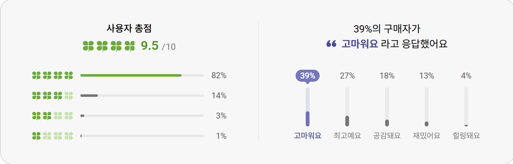
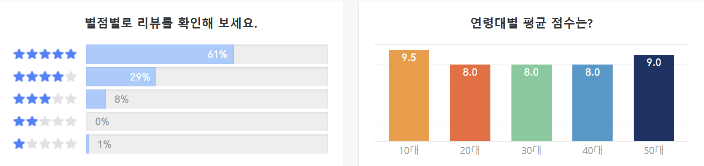
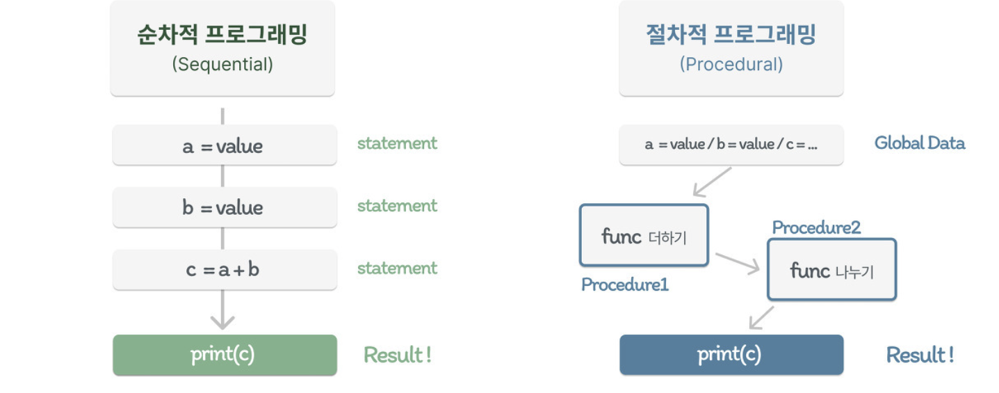

이번 주차에는 객체지향 프로그래밍에 대해 배우고
모바일 애플리케이션 워게임을 풀어보는 활동을 하였다.
객체지향 프로그래밍을 배워야 하는 이유
Kotlin 은 JVM 기반의 언라서 Java 와 유사하다.
Java 는 대표적인 객체지향 프로그래밍 언어이므로
Kotlin 또한 객체지향 프로그래밍 언어이다.
그래서 JADX 등으로 apk 를 분석하는 중에 많은 객체를 볼 것이다.
그러므로 객체지향에 대해 배워야 분석을 할 때 이해가 더 잘 될 것이다.
절차적 프로그래밍
객체지향 프로그래밍을 배우기 전에 절차적 프로그래밍과 어떤 차이점이 있는지
알아보기 위해서 절차적 프로그래밍에 대해서 먼저 설명하도록 하겠다.
절차적 프로그래밍은 단순히 순차적인 명령 수행이 아니라
함수, 메소드, 루틴 등의 프로시저를 이용한 프로그래밍 방법이다.
영어로는 PP(Procedural Programming) 이라고 한다.
예시로 온라인 도서 사이트를 프로그램으로 간단하게 표현하여 설명을 하겠다.
//C언어
#include
void kyobo_book_payment_service {
// 교보문고 결제
}
void yes24_book_payment_service {
// 예스24 결제
}
void aladin_book_payment_service {
// 알라딘 결제
}
int main() {
if (strcmp(bookstore, "교보문고") == 0) {
kyobo_book_payment_service();
else if (strcmp(bookstore, "예스24") == 0) {
yes24_book_payment_service();
else if (strcmp(bookstore, "알라딘") == 0) {
aladin_book_payment_service();
.
.
.
.
return 0;
}
이런 방식으로 프로그램을 제작하면 어떤 일이 있을까?
일단 유지 보수가 어렵다.
프로그램을 수정하려면 모든 함수를 수정해야 하고,
가독성이 떨어진다.
만약 다른 구매 사이트가 생긴다면 확장을 하기도 힘들다.
이러한 단점들을 해소하기 위해
객체지향 프로그래밍이라는 방식이 있다.
객체지향 프로그래밍
객체지향 프로그래밍은 객체들간의 상호작용을 통해 프로그램을 설계하고 개발하는 방식으로
영어로는 OOP(Object Oriented Programming) 이라고 한다.
객체지향에서는 데이터와 프로시저, 즉 자료형과 함수를 묶어서 관리할 수 있다.
예시로, 책이라는 객체를 만들었다면
책 이름과 같은 자료형뿐만 아니라
책 읽기, 감상평 적기 등과 같은 함수도 하나의 객체 안에 들어가는 것이 가능하다.
객체지향을 설명하기 위해 객체지향이 가진 특징,
추상화, 상속, 캡슐화, 다형성으로 설명할 수 있다.
추상화
객체들의 공통적인 기능, 속성 등을 추출해서 정의하는 것을 말한다.
앞서 예시로 들었던 온라인 도서 사이트를 생각해보자.
여러 사이트가 존재하지만 공통적으로 책 구매, 리뷰, 검색 등이 공통적으로 들어가있다.
이러한 특징을 온라인 도서 사이트라는 하나의 클래스로 정의한 후,
공통 특징을 추출하여 활용할 수 있다.
이때, 새로운 사이트를 추가하는 경우,
처음부터 모든 것을 추가하는 것이 아니라
공통 특징을 추상화로 구현했기 때문에
추가할 부분만 만드는 것이 가능하다.
캡슐화
캡슐화는 관련이 있는 변수와 함수를 하나의 클래스로 묶고
외부에서 접근할 수 없도록 감추는 것이다.
예시로 우리가 알고 있는 캡슐 알약에 캡슐을 생각해보자.
캡슐 안에 약이 어떤 성분인지는 모르지만,
아는 것과 상관없이 알약을 복용할 수 있다.
프로그래밍에서는 객체를 손상시키지 못하도록
세부적인 동작에 대한 구현을 감추는 것이다.
클래스 앞에 private, public, protected 등의 키워드로 접근을 제어할 수 있다.
| private | public | protected |
| 같은 클래스 내에서만 접근 가능 | 모든 클래스에서 접근가능 ※ 아무것도 삽입하지 않은 경우, 기본적으로 public 사용 |
상속 관계에서만 접근 가능 |
상속
상속은 이미 정의된 상위 클래스의 모든 속성과 연산을 하위 클래스가 물려 받는 것을 말한다.
기존 코드를 재활용하여 사용하기 때문에 코드의 생산성을 높힐 수 있다.
단순히 코드를 재활용하는 것이 아니라 기능의 확장 관점으로써 포함 관계에서만 사용해야 한다.
상속을 너무 과도하게 사용하면 결합도가 매우 높아져 유지 보수가 어렵게 되기 때문이다.
도서 사이트를 예시로 하면,
도서 사이트라는 부모 클래스에서 한국에 있는 도서 사이트라는 집합을 만들고 싶어
한국 도서 사이트라는 자식 클래스를 생성하는 것이다.
이때 자식 클래스는 부모 클래스의 특징을 상속받는다.
한국 도서 사이트라는 클래스는 부모 클래스와 마찬가지로
책 사기, 리뷰, 검색 등이 가능하다는 말이다.
다형성
하나의 변수 또는 함수가 명령을 받았을 때,
상황에 따라 서로 다른 방식으로 동작하는 것을 말한다.
다시 말하자면 동일한 명령이라도 각자 연결된 객체의 의존해서 해석하는 것이다.
대표적으로 메서드 오버로딩, 메서드 오버라이딩이 있다.
| 오버로딩 | 오버라이딩 |
| 같은 이름의 함수를 여러 개 정의한 후 매개 변수를 다르게 하여 같은 이름을 경우에 따라 호출하여 사용하는 방법 | 부모클래스의 메서드와 같은 이름을 사용하며, 매개변수가 같지만 내부 소스를 재정의하여 사용하는 방법 |
아까 만들었던 한국 도서 사이트, 교보문고, 예스24가 있다고 해보자.
같은 리뷰 기능이라도 그 안에 있는 점은 각자마다 조금씩 다르다.
 
번외. 절차적? 절차지향?
자료를 찾아보면서 많을 글들을 볼 때 마다 헷갈리는 점이 있다.
절차적 프로그래밍과 절차지향 프로그래밍이라는 표현 중 어느 것이 맞는 표현일까?
영문으로는 Procedural Programming 이라고 한다.
Procedural 에 해당하는 프로시저를 절차, 절차적 등으로 번역하여
순차적으로 진행되는 프로그래밍 방식이라고 오해가 생긴 것이다.
절차를 중시하는 프로그래밍 방식이 아니라
프로시저를 호출하는 프로그래밍 방식이다.

따라서 절차지향이 아닌 절차적 프로그래밍이 옳은 표현이다.
후기
나는 여태까지 절차적 프로그래밍 방식을 사용하여 코딩을 해왔기 때문에
객체지향 프로그래밍 방식으로 코딩을 해본 적이 없다.
하지만 이번에 공부를 해보니 객체지향 프로그래밍 방식에
유지 보수 등 여러 장점들이 있어 이 방식으로 코딩을 하고자 한다.